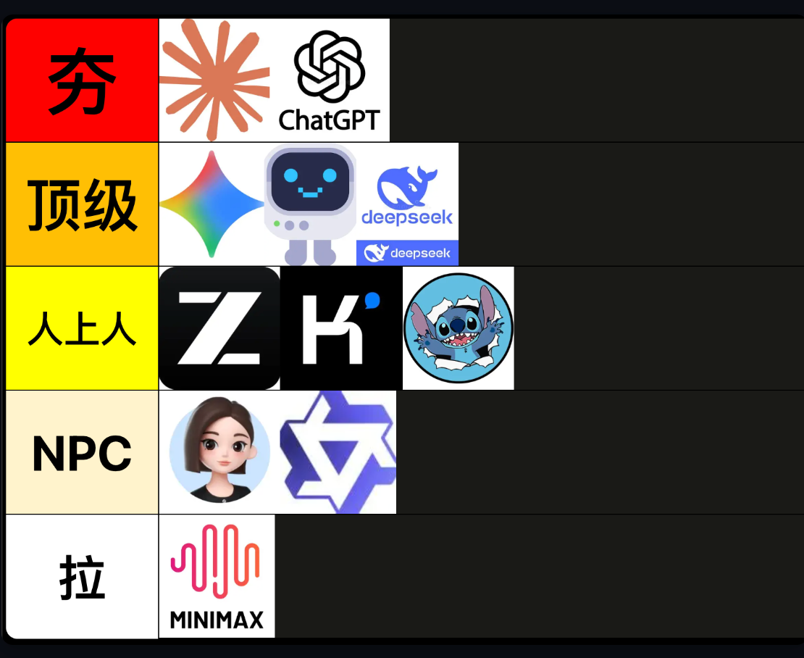
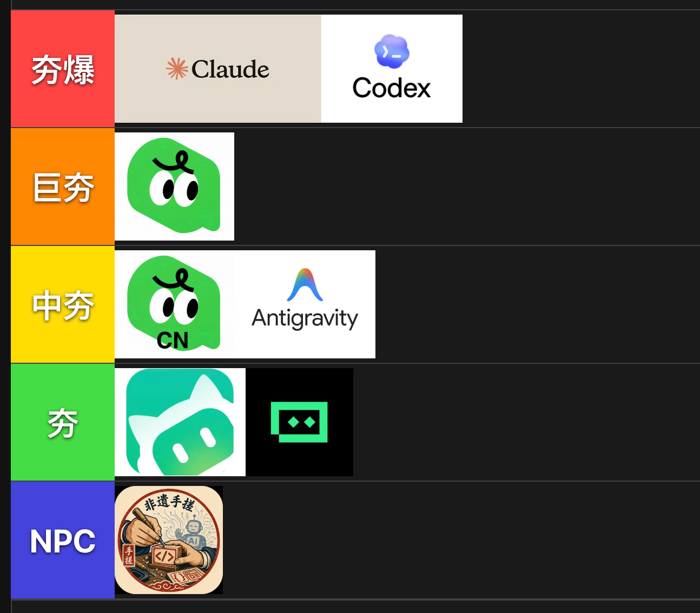
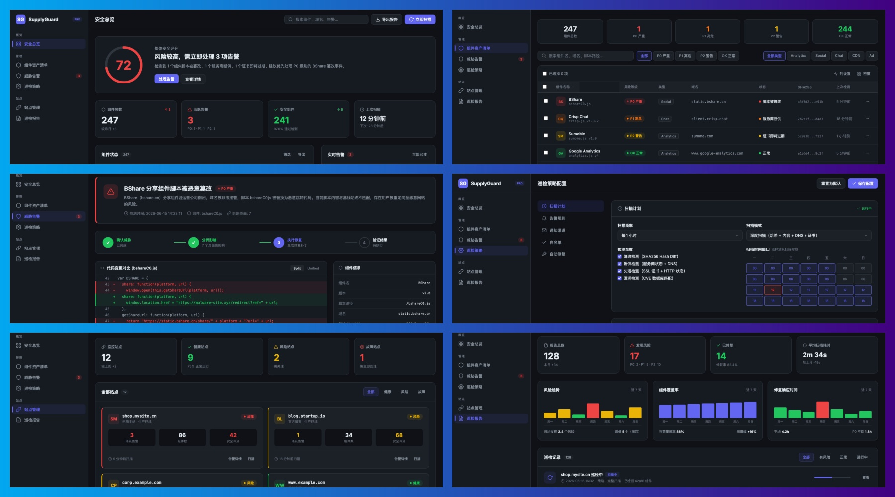
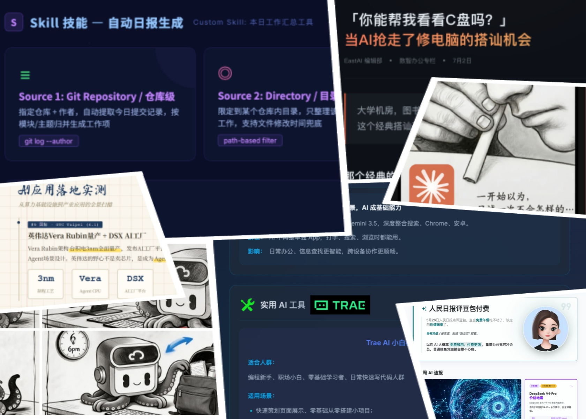

围绕"AI 赋能业务"这一核心目标，团队在约 8 周内完成了理论学习 → 工具试用 → 项目落地 → 产品规划的闭环：
| 维度 | 关键动作 | 成果形态 |
|---|---|---|
| 模型接入 | 系统梳理 9 种大模型接入方式、对比成本/可控性/稳定性 | 会议纪要 + 选型策略 |
| 工具链实战 | 深度试用 Trae、Stitch、Kimi、豆包、即梦、LibTV 等 10+ 工具 | 内刊/海报/视频素材 |
| Agent / 数字员工 | 搭建测试龙虾、产品龙虾，制定数字员工平台架构 | 原型 + 架构方案 |
| 安全巡检 | 启动 SupplyGuard 第三方组件安全巡检项目，完成完整 UI 设计 | 6 页 HTML 高保真原型 |
| 内容运营 | 建立《EastAI 丨视界》企业内刊，输出 7 期 | 7 期 HTML/图片内刊 |
| 竞品调研 | 评测 WorkBuddy、二元 AI、腾讯乐享等数字员工/Agent 产品 | 调研报告 |
| 项目落地 | 客户项目 AI 辅助创意素材生成展示、动效预览、项目小样汇报等 | HTML/高保真图片 |
团队按"控制力—成本—上手难度"三维度，将主流接入方式划分为 9 类：
关键结论 接入方式选择的核心不是"哪个模型最强"，而是"数据边界、成本可控、系统耦合度"三者平衡。生产环境优先原厂/云厂商；规模化必须建 AI 网关；试点阶段可用 MaaS/中转快速验证。
| 梯队 | 代表模型 | 适用场景 | 成本/效果定位 |
|---|---|---|---|
| 顶级模型 | Claude、GPT-4o、Gemini | 复杂逻辑推理、代码生成、高质量文案 | 效果领先，订阅门槛高 |
| 性价比之选 | DeepSeek、Mimo | 高频日常任务、代码生成、长文本处理 | 降价后性价比极高 |
| 中文长文档 | Kimi 2.5 | 论文/合同/长报告阅读 | 中文长文档解析优势明显 |
| 谨慎使用 | 智谱 GLM | — | Token 价格高且难抢，不作为首选 |
关键结论 日常任务用 DeepSeek/Mimo；复杂推理/代码用 Claude/Gemini；中文长文档用 Kimi。建立"模型网关 + 分层调度"是控制成本的关键。


团队已经形成"先出 Demo → 再反推 PRD → 再迭代交付"的新工作流：
关键结论 AI 工具已经把"写需求 → 画原型 → 写代码"的线性流程压缩成"对话 → 可运行原型 → 迭代"的闭环。产品经理和设计师的工作重心从"动手做"转向"判断与验收"。
| 工具 | 用途 | 落地情况 |
|---|---|---|
| 即梦 / 通义万相 / LibTV | 图片、海报、插画、视频生成 | 内刊插画、海报、Banner 已实际使用 |
| Flow + Runway ML | 静态 Banner 转循环动态视频 | 解决视频动态效果生硬问题 |
| 万镜一刻 | 输入剧本自动生成分镜、角色、成片 | 短剧/营销视频量产效率提升 80% |
| AE / 剪映 | 后期精修、序列帧导出 | 与 AI 生成结合形成完整工作流 |
| 小云雀 | 输入文字即可生成短视频【含分镜处理】、数字人口播、创意图片，支持音画同生和爆款复刻 | 适合用在短剧 Demo、营销素材快出 |
关键结论 AI 视觉已经从"尝鲜"变成"可交付"。核心转变是：放弃繁杂手绘/风格尝试/排版内耗，用 AI 做创意落地与风格统一，人工只做最后精修与品牌把关。
经过这段时间的密集使用，团队对以下几款 AI 工具形成了不同的实战感受。每款工具都有明确的适用边界和独特价值，核心原则是——"不求全，但求用得舒服"。
| 工具 | 定位 | 成本/费用 | 核心体验 | 推荐场景 | 痛点/槽点 |
|---|---|---|---|---|---|
| Trae IDE | AI 原生编程环境 专属 AI 开发工程师 | 个人免费版（模型限制） 会员订阅 Pro 版（可选模型更多） 海外版可付费用 ChatGPT |
|
|
|
| Trae Work | 智能工作助手 团队AI 项目管理 | 免费试用 团队版订阅（具体面议） |
|
|
|
| Qoder | AI 编程助手 Agentic Coding 平台 | 个人免费版（基础功能） 团队版订阅（更多额度） |
|
|
|
| Google Stitch | AI 驱动 UI 生成 | 目前免费（实验阶段），未来或并入 Google Workspace 付费计划 |
|
|
|
| Hermes | 自动化执行智能体 | 开源免费（自部署） 托管版付费 |
|
|
|
| Qclaw（龙虾） | 全能型个人 Agent | 个人免费版（基础功能） 付费版（更多记忆、更长上下文） |
|
|
|
| Marvis | 桌面端 AI 智能体 | 目前免费（内测阶段），正式定价待公布 |
|
|
|
| WorkBuddy | 桌面端 AI 助手 | 个人免费版（功能限制） Pro 订阅（完整功能 + 本地集成） |
|
|
|
| 悟空 | AI 助手/浏览器智能体 | 个人免费版（每日限额） 会员版（更高额度） |
|
|
|
| Ardot | 设计协作 AI 平台 | 团队付费（按席位计费），价格面议 |
|
|
|
| 乐享知识库 | 企业知识管理平台 | 个人免费版（Agent 使用次数限制） 企业版按订阅计费 |
|
|
|
关键结论 工具不在多，在于"用顺手"。当前阶段，团队按 2 个日常办公场景形成了各自的工具矩阵：
原型开发与交付：Trae IDE（写代码）+ Stitch/Workbuddy（出 UI），从需求讨论到可交互原型一条线跑通，覆盖了团队最高频的"出 Demo"需求。
日常办公效率：Qclaw（个人任务、文档汇总）+ WorkBuddy（自动化办公、文件操作、个人助理）+ Marvis（私人网管），覆盖查资料、出方案、理文件三件高频事。
核心原则不变：高频任务用成熟工具，探索任务用小范围试点，不盲目追新。
| 能力 | 表现 | 适用场景 |
|---|---|---|
| 文件/命令/API 操作 | 可执行，但稳定性不高，需人工兜底 | 个人助理、重复办公自动化 |
| 新闻汇总/文档处理/会议纪要 | 可快速落地，降低上手门槛 | 行政/运营高频任务 |
| 原型设计/复杂逻辑 | 能力不足，存在明显幻觉 | 不建议单独使用 |
| 记忆能力 | 三层记忆（短期/日记录/高价值提取） | 个人工作流养成 |
关键结论 当前龙虾更适合"个人数字助理"场景，用于处理重复性、规则明确的工作；涉及复杂决策、精细逻辑、对外交付的任务仍需人工介入。
团队提出"Agent + 工具"作为最小执行单元，数字员工平台需包含：
落地路线图：
| 阶段 | 周期 | 目标 |
|---|---|---|
| 第一阶段 | 4 个月 | 单员工闭环：注册/套餐/创建/部署/任务执行，输出可演示 Demo |
| 第二阶段 | 6-8 个月 | 商用试点：渠道接入、知识库、审批流、用量统计、后台运营 |
| 第三阶段 | 9-11 个月 | 完整增强：模型网关、API 网关、A2A 多智能体协作、成本治理 |
关键结论 不建议复刻腾讯 WorkBuddy 的"人海战术 + 全场景覆盖"，应聚焦细分赛道，通过"引擎 + 垂直场景"建立壁垒。
| 产品 | 优势 | 劣势/风险 |
|---|---|---|
| WorkBuddy | 多角色、提示词工程较深 | 功能同质化，缺乏 PC 端，体验一般 |
| 二元 AI | 数字分身、个人知识库 | 7 天无理由、客单价高，功能未必超出通用模型 |
| 腾讯乐享 | 企业知识库、内容协同 | 偏向内容管理，Agent 执行能力弱 |
关键结论 数字员工赛道的核心门槛不在"有没有大模型"，而在数据沉淀、提示词工程、执行闭环、成本治理四件事。我们要做的不是另一个 Chatbot，而是"能执行任务的数字员工"。
客户网站引用的第三方插件（如 BShare、问卷星、社交分享按钮）可能因域名过期/被劫持导致跳转赌博、钓鱼网站。传统人工巡检无法覆盖海量页面与动态加载内容。
| 检测类型 | 说明 | 典型风险 |
|---|---|---|
| 篡改检测 | SHA256 hash diff 实时对比 | 脚本被替换为恶意跳转代码 |
| 断供检测 | 服务商状态追踪 + DNS 变更告警 | 公司倒闭后域名被接管 |
| 失活检测 | SSL 证书过期 / HTTP 异常 | 证书过期导致 HTTPS 加载失败 |
| 漏洞检测 | 已知 CVE 安全漏洞 | 使用存在漏洞的组件版本 |
已完成 6 页高保真 HTML 原型：
关键结论 SupplyGuard 已经从"需求讨论"进入"可演示原型"阶段，可直接作为安全产品线孵化，或封装成 SaaS 服务对外销售。

| 期数 | 亮点 | 形式 |
|---|---|---|
| 01 期 | Trae 极简入门、本周 AI 速报 | 基础网页 |
| 02 期 | DeepSeek 降价、豆包付费、实用工具分享【Kimi 2.5、通义万相】 | 轻量 Markdown |
| 03 期 | 讲述程序员从接触各类 AI 工具，沉迷 Vibe Coding，充值消耗 Token，重度依赖 Claude 等高阶 AI | 标准 HTML |
| 04 期 | 围绕 GPT-5.6 即将发布、国产 AI 调用量登顶、AI 自主办公时代来临三大行业热点，推荐了四款免费国产 AI 工具 | 图片素材 |
| 05 期 | "景小艾"AI 打工人日常故事，12 张图连载插画 | 创意故事长图 |
| 06 期 | 研发硬核输出：【日报作弊工具】Git Commit 规范 + 自动日报 Skill | skill 安装包 + 使用说明图 |
| 07 期 | 生活场景化叙事：AI 清 C 盘，改写「帮我看看 C 盘」搭讪名场面 | 故事长图 |
关键结论 内刊不仅是信息发布，更是团队 AI 文化的载体。从"资讯播报"进化到"故事化表达 + 数据化展示"，内容运营能力在持续升级。

| 成果 | 形态 | 价值 |
|---|---|---|
| AI 模型接入策略 | 调研报告 | 为公司后续 AI 选型提供决策依据 |
| 数字员工平台架构方案 | 调研报告+规划 | 明确自研方向，避免盲目投入 |
| SupplyGuard 原型 | 6 页 HTML + 设计规范 | 可直接用于产品孵化或客户演示 |
| 《EastAI 丨视界》共 7 期 | HTML/海报/长图 | 内部 AI 文化建设 + 外部品牌传播素材 |
| 二元 AI / WorkBuddy 竞品报告 | 调研报告 | 支撑自研产品差异化定位 |
| 测试龙虾 / 产品龙虾 | 实践原型 | 验证办公自动化可行性 |
| 客户项目 AI 辅助原型 | 签证服务中心、景云等 | 真实业务中验证 AI 工作流 |
AI 能力提升的同时，新的风险也在快速出现。以下是我们结合近期实践和外部趋势整理的重点警惕清单：
| # | 问题 | 应对 |
|---|---|---|
| 1 | AI 幻觉 | 编造数据、伪造文献、虚构案例频发，所有关键结论必须人工复核，建立"AI 初稿 + 人终审"机制。 |
| 2 | 数据安全与隐私泄露 | 公司机密、客户隐私、未公开方案严禁输入公共 AI；优先采用私有化/本地化部署，敏感数据不出域。 |
| 3 | Agent/工具稳定性 | 龙虾/Agent 在复杂逻辑、多步骤任务上仍不稳定，关键流程必须设置人工兜底、异常熔断和回滚机制。 |
| 4 | 提示词注入与恶意攻击 | 对外暴露的 AI 接口需做输入清洗、权限控制和审计；避免用户通过提示词绕过安全边界或获取越权信息。 |
| 5 | 版权与知识产权风险 | AI 生成代码、文案、图片可能涉及素材侵权，商用前需核查来源，避免直接复制受保护内容。 |
| 6 | 深度伪造与信息污染 | AI 生成内容越来越逼真，事实性内容必须可追溯来源，重要信息需多源交叉验证。 |
| 7 | 成本失控 | Agent/多轮对话会导致 Token 消耗指数级增长，需设置预算上限、用量审计，并按任务复杂度选择模型梯队。 |
| 8 | 合规与监管风险 | 数据出境、算法备案、生成内容标识等法规趋严，需提前关注合规要求，保留完整操作日志。 |
过去 8 周，团队完成了从"AI 工具尝鲜"到"AI 项目落地"的关键跨越。核心收获不是某个工具用得有多熟练，而是建立了"模型接入选型 → 工具链工作流 → Agent 平台架构 → 安全/办公场景落地 → 内容运营"的完整认知体系。
下一步，建议明确 1-2 个重点方向加大投入（SupplyGuard 安全巡检、邮件归档 AI 赋能、数字员工平台），避免力量分散，尽快跑出第一个可商业化的 AI 产品。